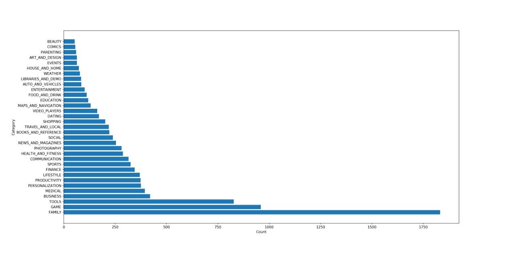
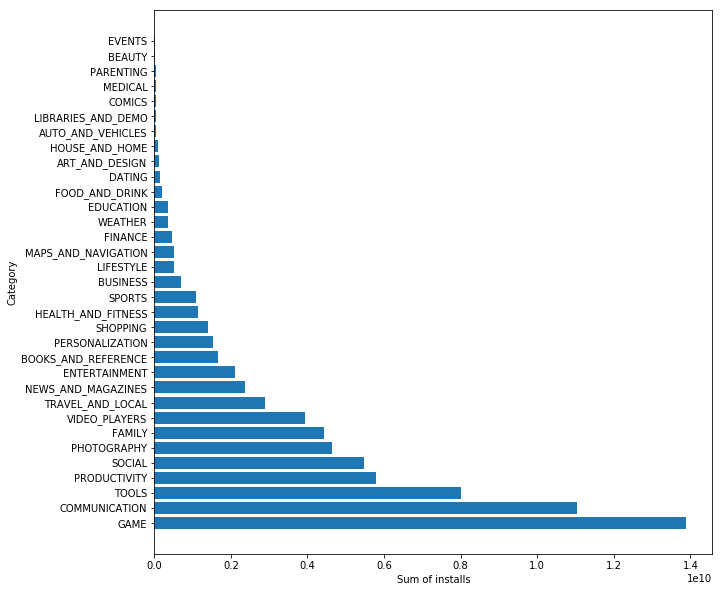
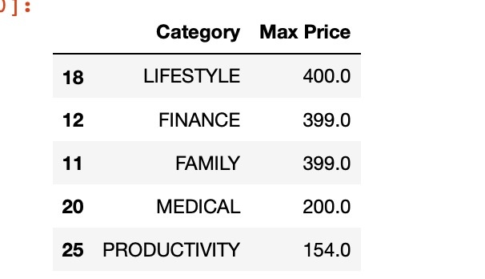
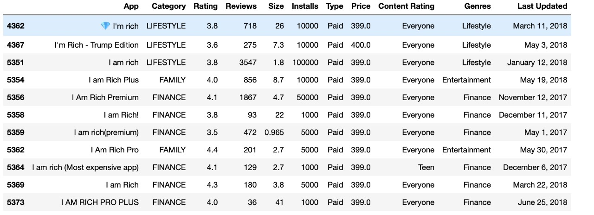
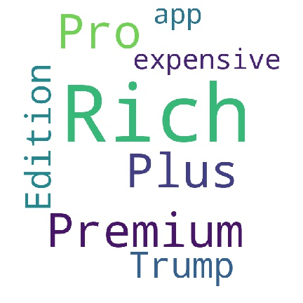

Mobile apps are everywhere. They are easy to create and can be lucrative. Because of these two factors, more and more apps are being developed. In this project, you will do a comprehensive analysis of the Android app market by comparing over ten thousand apps in Google Play across different categories. You'll look for insights in the data to devise strategies to drive growth and retention.
The goal of this notebook is to illustrate how we managed to apply data cleaning processes on the two given datasets and to find correlations between its attributes and how they can affect each other. Moreover, we will discuss some statistics and figures related to the datasets.
A. Investigating different app categories
1- How many unique categories are in the dataset?
Which of these categories have the fewest number of apps?

3- Which of these categories have the highest number of apps?
In the figure above, we can also observe that the categories FAMILY, GAMES and TOOLS have the highest number of apps which exceeds 500 apps.
#### 4- What type of categories do people mostly install?

B. Exploring Free and Paid apps
1- What are the categories that contain the most expensive apps?

2- Which apps in the above categories have the more than 1000 installs?


3- How many categories contain free and paid apps together?